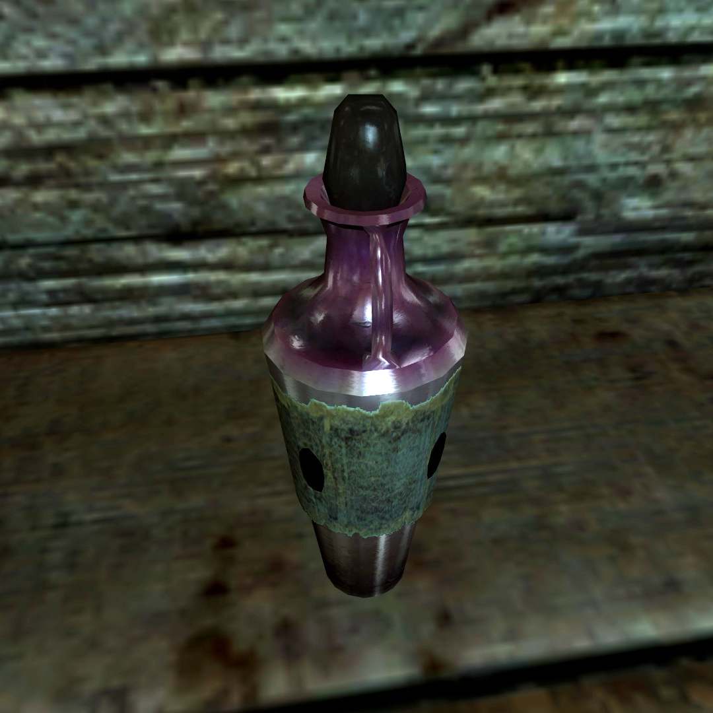

Skooma Recipe

How To Make Skooma
Because skooma is so highly sought-after,yet so illegal, some enterprising innkeepers across Tamriel have cooked up their own version of a cordial that mimics that addictively sweet drink so loved by the Khajit.
Ingredients
- 1 cup sugar
- 3/4 cup boiling water
- 2 cups vodka
- 10 pitted dried apricots, diced
- Pinch of ground cardamom
- Dash of vanilla extract
Steps
- Combine the sugar and boiling water in a small heat-proof container, and stir until sugar has dissolved.
- Pour into a clean bottle, then add the remaining.
- Cap the bottle and sit somewhere dim to infuse, shaking occasionally.
- Allow to steep for 2 to 3 weeks, or up to 1 month for maximum flavor.
- Strain out the apricots and store the Skooma in a glass bottle.
- Serve in small cordial glasses.
Home